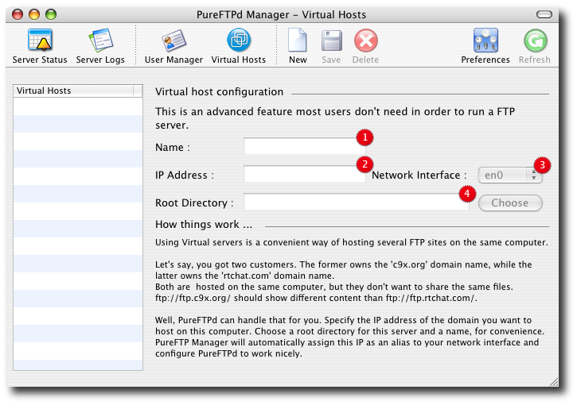

PureFTPd Manager - Virtual Hosts PureFTPd Manager - Virtual Hosts
This is an advanced feature most users don't need in order to run a basic FTP server.
This module works as is but it could be much better designed. I'll improve it in one of the next release of PureFTPd Manager.
Using Virtual servers is a convenient way of hosting several FTP sites on the same
computer. Let's say, you got two customers. The former owns the 'c9x.org'
domain name, while the latter owns the 'rtchat.com' domain name. Both are
hosted on the same computer, but they don't want to share the same files.
ftp://ftp.c9x.org/ should show different content than ftp://ftp.rtchat.com/.
The FTP protocol doesn't allow name-based selection. So, if you want to host
x different virtual FTP servers on the same host and keep the standard port,
you need x different IP addresses. Yes, Sir. Or use HTTP.

1. Name you identify your virtual host with. It can be anything you want, although something like ftp.rtchat.com is suggested
2. The IP Address field lets you specify the IP address alias you want to assign to your virtual host. It is usually the public IP address remote user will use to connect to your server.
3. The Network Interface Card you assign the previous to.
4. A base Root directory for your virtual FTP server.
Read more ...
|
 Server Logs
Server Logs